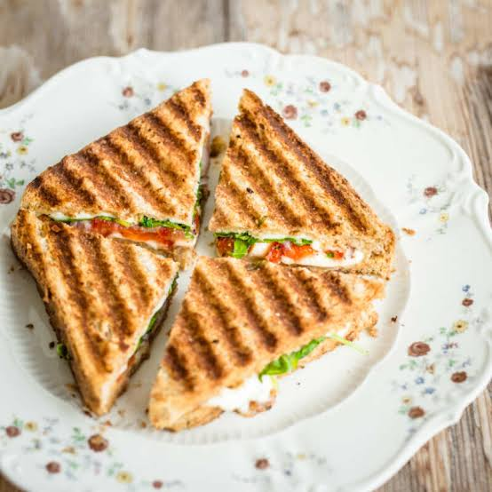

this sandwich recipe page

This is the recipe of sandwich
In this recpie we will learn how to sandwich in a healthy and a tasty way
Ingredients
- 1 teaspoon dried Mexican oregano
- teaspoon ground cumin
- ½ pound skinless, boneless chicken breast
Steps
- Preheat the oven to 250 degrees F (120 degrees C)..
-
Whisk egg in a shallow bowl. Dredge chicken breast through egg; leave it
in the bowl. Add bread crumbs, cilantro, chipotle, oregano, cumin, and
pepper to the bag; shake well. Lift chicken from the bowl, letting any
excess egg drip off. Add to bread crumb mixture. Shake and press
seasoned bread crumbs over chicken breast. .
-
Place bolillo buns in the preheated oven until warmed through and
toasted, about 12 minutes.
-
Meanwhile, mix mayonnaise and hot sauce together in a small mixing bowl.
-
Heat oil in a skillet over medium heat. Cook chicken until browned,
about 6 minutes per side. An instant-read thermometer inserted into the
center should read at least 165 degrees F (74 degrees C). Cut chicken in
half, lengthwise.
-
Assemble sandwiches. Spread spicy mayonnaise over both sides of the
rolls. Add equal amounts of avocado, tomato, lettuce, carrots, and
jalapeños to 2 halves. Add chicken and tops of rolls. Serve with
remaining spicy mayonnaise for dipping.